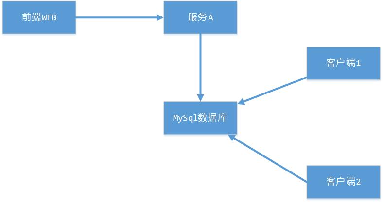

时区
下面用如下系统结构介绍下时区概念：

1、现在前端WEB需要获取到当前时间:new Date() ，new Date()创建时间代表当前时刻，是不涉及到任何时区问题的，Date类型的API中也没有任何和时区进行关联的方法，Date可以代表对时间戳long的一个封装，表示一个瞬时时刻，Date.getTime()方法就可以获取到当前封装的时间戳值，同理也可以通过new Date(时间戳)来创建一个时间，比如当前时间戳：1514966524591L
2、现在要把这个获取到的new Date()传递到服务A中，假如使用常用到的REST接口进行传递，我们知道REST是通过Json字符串传递参数的，这就涉及到Date到字符串转换的问题了，要用到SimpleDateFormat时间格式化类：
1 | SimpleDateFormat dateFormat = new SimpleDateFormat("yyyy-MM-dd HH:mm:ss.SSS"); |
由于时间格式化时没有指定时区，默认采用当前系统时区，所以这个输出就代表：北京时间(东八区)2018-01-03 16:02:04.591
当然现在框架都是集成了Json转换工具类，你不需要像我这里自己创建SimpleDateFormat然后指定时区，但原理都是一样的，一般框架将Date转成Json对象都是会提供设置时区的接口的。
如果和服务A约定使用UTF零时区而不是使用本地时区呢，因为使用本地时区存可能会存在问题，假如WEB服务部署到东九区而不是东八区，这样使用SimpleDateFormat解析new Date()使用的是东九区时区，服务A收到了可能依然会认为是东八区，这样服务A解析传递过来的时间字符串就会存在问题。WEB服务和服务A就可以约定传递使用UTF时区，保证就不会出现问题，但是WEB在将Date转成String的时候需要指定UTF时区，不能再使用默认的系统本地时区了，如下：
1 | SimpleDateFormat dateFormat2 = new SimpleDateFormat("yyyy-MM-dd HH:mm:ss.SSS"); |
发现比之前的2018-01-03 16:02:04.591少了8个小时，这就体现了同一个时间，在不同时区代表的具体时间，即几月几日，几点几分是不一样的，但是东八区的2018-01-03 16:02:04.591和UTF时区的2018-01-03 08:02:04.591代表的是同一个时间，即同一时刻。
3、服务A接收到2018-01-03 16:02:04.591这个代表时间的字符串，需要将其转成成Date类型，它就需要知道这个时间字符串到底代表那个时区的，当然如果服务A本身就是运行在东八区就不需要指定时区(默认和系统时区保持一致)，否则解析的时候就需要指定具体的时区：
1 | String timeStr = "2018-01-03 16:02:04.591"; |
如果WEB传递过来的是UTF时区时间：2018-01-03 08:02:04.591，服务A解析如下：1
2
3
4
5String timeStr = "2018-01-03 08:02:04.591";
SimpleDateFormat dateFormat3 = new SimpleDateFormat("yyyy-MM-dd HH:mm:ss.SSS");
dateFormat3.setTimeZone(TimeZone.getTimeZone("GMT"));//指定用UTF时区解析时间
Date date3 = dateFormat3.parse(timeStr);
System.out.println(date3.getTime());
输出：1514966524591(和WEB传入的Date的时间戳一致，即传递过程正常)
总结：如果系统间时区不一致，或者约定传递时间用UTF时间格式，就要保证两个方面：
1、传递方在将Date解析成字符串时指定时区为UTF
2、接收方在接收到时间字符串进行解析成Date类型时，也需要指定时区为UTF
3、如果不指定都会采用系统默认时区，可能就会存在问题
4、服务A正常解析出WEB传递过来的时间后，写入到数据库表中的一个字段中，如果字段类型是datetime，插入数据是不受任何时区影响的(包括服务本地时区、MySQL运行服务器时区及MySQL自己时区)，这就是Date代表的时间至少时间戳的封装，相当于一个long型，时间戳是没有时区概念的。
1 | 查看数据库时区： |
time_zone说明mysql使用system的时区，system_time_zone说明system使用CST时区，CST时区在这里就代表的是北京东八区时区、
但是这里要注意下：你使用select查询的时候，其实是存在数据库中Date类型到字符串转换的过程，因为你使用select查询看到的时间一般都是“2017-10-1 12:00:00”等这种格式，这就是数据库时区的作用，同理，如果数据库字段是datetime，你insert时指定的是“2017-10-1 12:00:00”等这种数据，数据库也是会存在上面说的字符串转成Date要涉及到时区，这里使用的也是数据库时区，其实更上面介绍的Date传递原理是一致的。如果你把数据库时区修改了，select查询出来同样的数据，展示的时间字符串是不一样的，就是这个道理。
5、服务B从数据库查询，查询出来的是一个Date类型，这里是不会涉及到任何时区问题。可能经常会出现下面一种情况：
1、客户端1从数据库查询该数据看到的是2018-01-03 16:02:04.591，因为没有指定时区默认使用的是本地时区，假设为东八区
2、客户端2从数据库查询拿到同样的数据，但是输出的确是2018-01-03 08:02:04.591，因为客户端本地系统时区为UTF时区
3、虽然客户端1和客户端2看到像是不同的时间，但是它们拿到的是同一份数据，指向的时间也是同一个时刻的时间，即这一个时间时刻在不同时区有不同的表示，但是代表的时间都是同一个时刻
4、如果需要统一时区，需要向之前样式，转换时指定时区即可
总结
计算机中的时间都是通过时间戳表示的，如程序中的Date类型、数据库中的Date类型，其内部就是对时间戳的一个封装，时间戳没有时区概念，所以在计算机中的时间是没有时区概念的。
那么为什么会有时区概念呢？时区存在主要是为了：自然时间表示时必须要有时区才有意义，否则时间是没有意义的。自然时间就是现实生活中人们所认识的时间，计算机中的时间是时间戳，在现实生活中肯定是不方便理解的，现实生活中我们还是更倾向使用”2018-01-20 18:00:00”这种自然时间，但是这个时间表示是有问题的：到底是哪个时区的1月20号18点呢？
时间的概念更倾向于时刻，它是全世界唯一的，比如现在这个时刻东八区北京时间是：2018-1-25 15:30:30，其对应的时间戳是1516865430404，但是同样这刻在零时区时间是：2018-1-25 07:30:30，但是它的时间戳依然是1516865430404，也就是说，计算机中的时间戳是一个时刻的概念，不存在时区区别，但是当这个时刻表示为自然时间时就存在不同时区表示方法不一样了。
综上来看，我们在程序开发中，当存在”2018-01-20 18:00:00”解析为Date类型，或Date类型格式化为”2018-01-20 18:00:00”，即计算机时间和自然时间相互转换时，就一定要注意时区，这是因为当出现”2018-01-20 18:00:00”必须带有时区才有意义。
在平时开发中，如果多系统间需要传递时间，最近实践是采用时间戳传递而不是”2018-01-20 18:00:00”这种时间格式传递，原因如下：
1、时间戳占用的字节大小比2018-01-03 16:02:04.591小很多，在系统间传递网络带宽更有优势；
2、当然最主要的还是：时间戳不存在时区概念，不需要进行转换，而2018-01-03 16:02:04.591格式在传递时进行转换非常容易引起混乱导致错误
3、数据库中的时间类型采用long型时间戳，效率更高